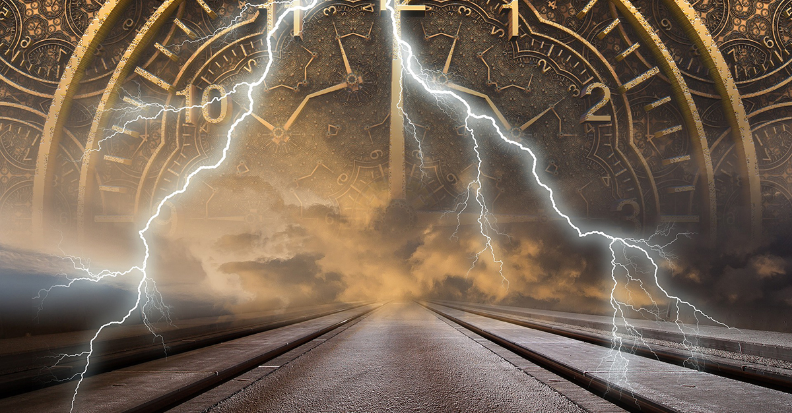
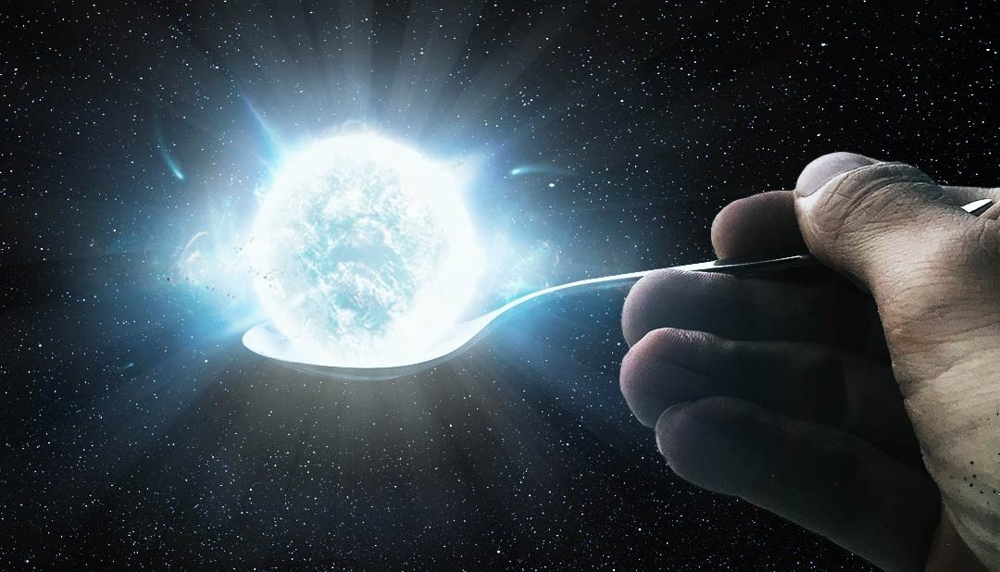
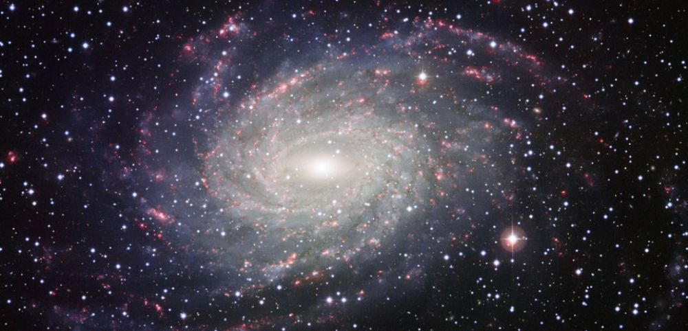
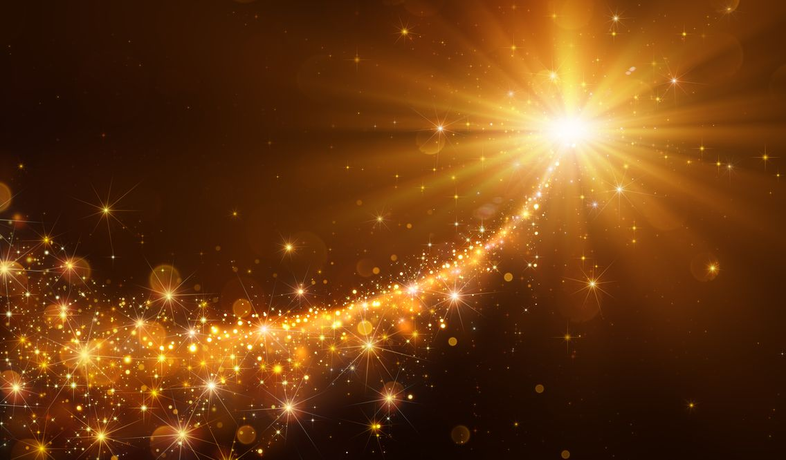
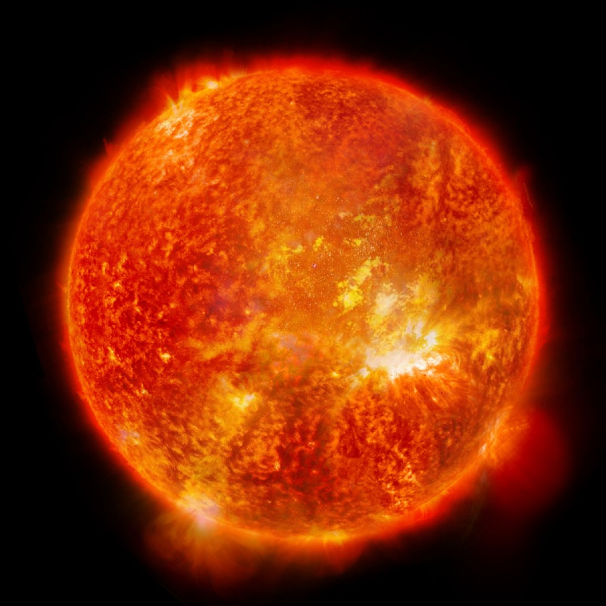
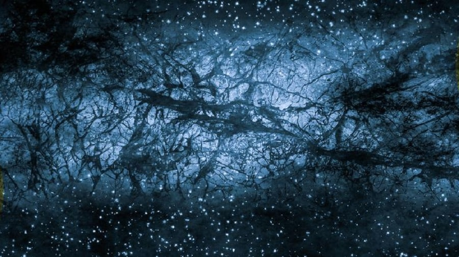
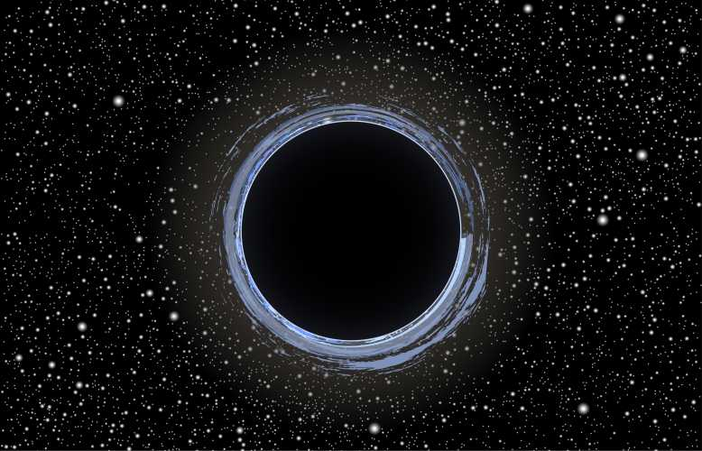
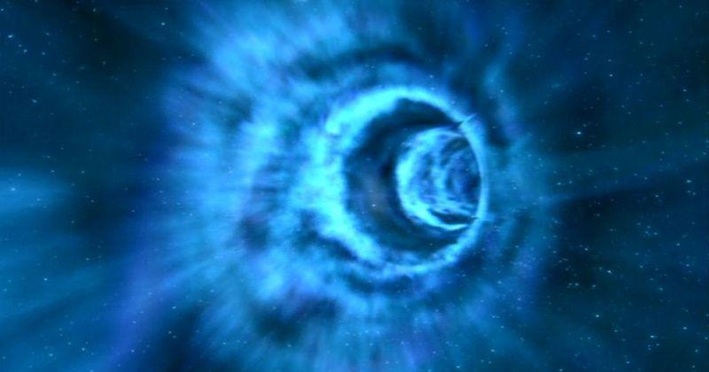
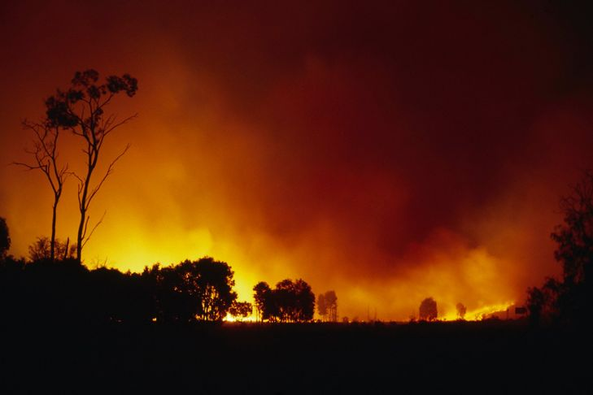

L'UNIVERS
1. Quand on regarde le ciel, on regarde dans le passé
Par exemple, le Soleil se trouve à 8 minutes lumière de la Terre, donc regarder le soleil c’est regarder 8 minutes dans le passé. Une triste époque où vous ne connaissiez même pas encore ce fait impressionant. Certaines étoiles dans le ciel sont peut-être mortes il y a très longtemps.
2. Le pois d'une étoile à neutrons.
Une cuillère à café de matière d'étoile à neutrons pèse un milliard de tonnes. Quelle idée de prendre une cuillère à café d’étoile à neutrons, en même temps.
3.Le nombre d'étoile
Il y a 400 milliards d'étoiles dans la Voie Lactée et 170 milliards de galaxies dans l'Univers Ca fait plus d’étoiles que de grains de sables dans le mini jardin zen qui décore votre bureau.

4.Les multivers
Il se peut qu'il y a un nombre infini d'univers Ce qui ferait qu’on vit dans un multivers. Il se peut même que ces univers se forment à partir de trous noirs d’autres univers et que notre propre big bang serait issu d’un trou blanc (qui, hypothétiquement, serait ce qu’il pourrait y avoir à l’autre bout d’un trou noir).

5. On est tous faits de poussière d'étoile
Presque tous les éléments trouvés sur Terre ont été créés dans le noyau d’une étoile qui a explosée, à part les vieux losers que sont l’hélium et l’hydrogène.

6. La taille du soleil.
Le Soleil est tellement grand qu'on pourrait y mettre 1,3 millions de Terres à l'intérieur.
7. La matière de l'univers
La matière observable ne représente que 5% de l'Univers Le reste, c’est la matière noire et l’énergie sombre, qui constituent 95% de notre Univers et qui sont invisibles.

8. Les trous noirs
Un trou noir est un objet tellement compact qu’il empêche toute forme de matière ou de rayonnement de s’en échapper à cause de son champ gravitationnel. Ils ne peuvent pas émettre ni diffuser de lumière, donc en gros ils sont invisibles.

9. Les trous de ver
C’est un concept purement théorique, mais si ça existe, un trou de ver formerait un raccourci à travers l’espace-temps qui se manifesterait d’un côté par un trou noir, et de l’autre par un trou blanc. En gros ça permet de se téléporter d’un endroit à l’autre au lieu de faire tout le chemin.
10. On va tous mourir
Dans environ 5 milliards d’années, le Soleil va se transformer en géante rouge, s’élargissant ainsi jusqu’à manger la Terre. MAIS, vu que le Soleil augmente de 10% en luminosité chaque milliard d’années, la Terre sera déjà invivable dans un milliard d’années parce qu’il n’y aura même plus d’eau liquide. Bon, faut pas s’étonner s’il se passe encore d’autres crotte d’ici là.
